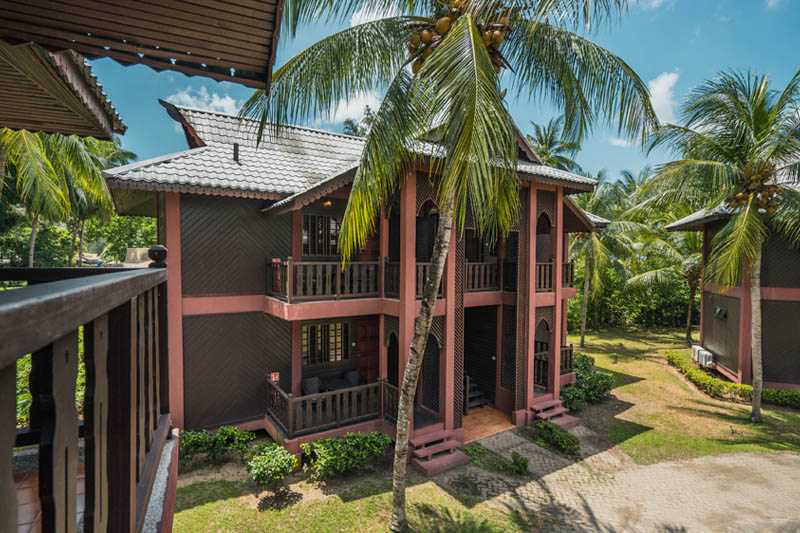
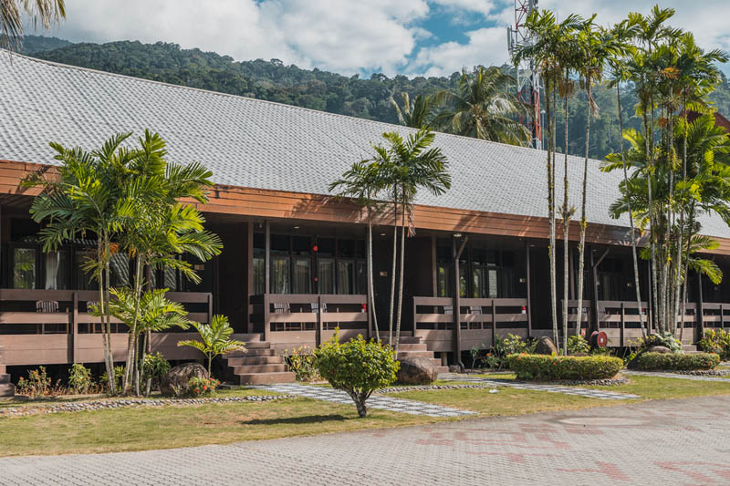
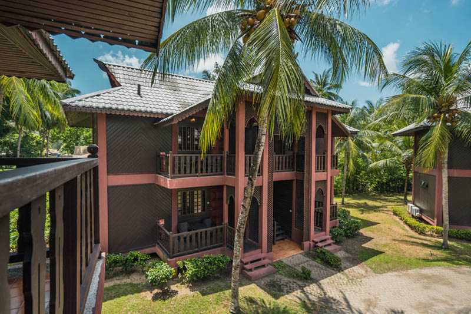
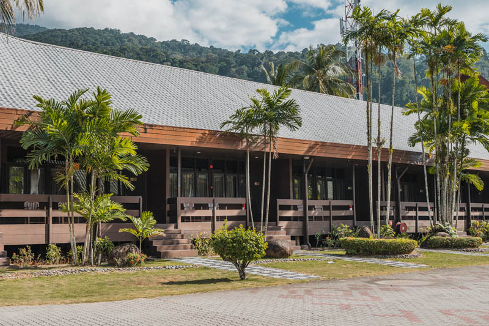
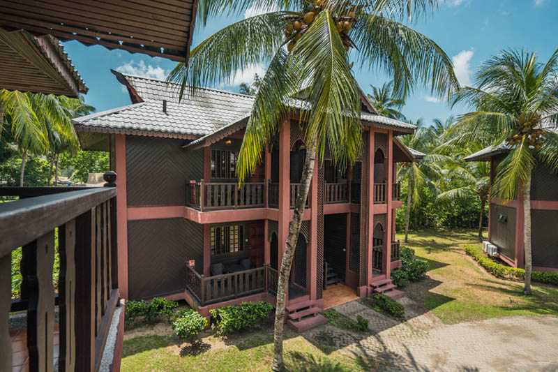
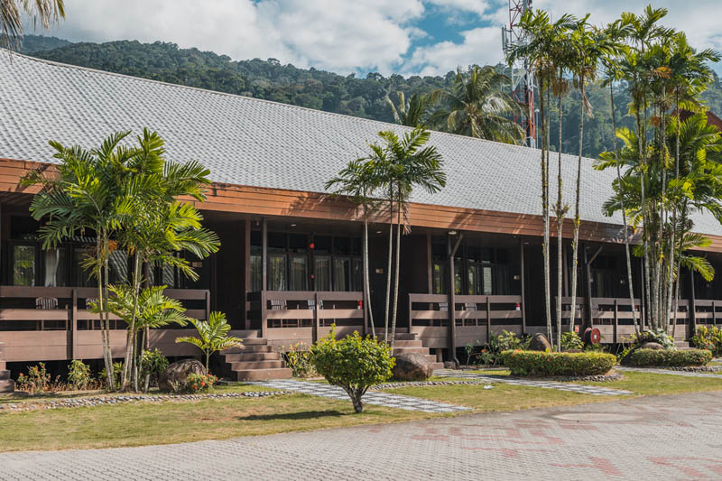

Tunamaya Beach & Spa Resort is an idyllic location for leisurely days under
the sun in an absolute secluded beach & resort, regardless if you spend it within the resort or by exploring the island.
There are several villages scattered around the coastline, the larger ones being Salang, Tekek, Genting, Paya and Juara.
Or simply take a journey through island hopping for a diving adventure or just enjoying the scenic moments and not forgetting to
visit the island’s village township for your duty free shopping at Tekek.
Discover astounding underwater sights such as colourful corals, a spectacular display of ocean species and unique sea creatures from starfish to sea turtles.
Berjaya Tioman Resort


Berjaya Tioman Resort is the largest resort in Pulau Tioman, sprawled over 200 acres across the tropical rainforest with spacious beachfront surroundings at the western edge of Tekek Village.
A classic traditional concept of four-star resort, there are large facilities and amenities provided, including function halls,
dive center, spa, 18-hole golf course, outdoor team building circuit, swimming pools and various restaurants.
Swiss Cottage Tioman
Swiss Cottage Tioman is a family and dive resort situated west of Tekek village on a peaceful beachside, featuring a very relaxing jungle-like garden setting and cosy chalets.
Despite its name, the resort is very Balinese in architecture, with ethnic stylings and plenty of tribal decorations.
The hotel operates a dive center and the only freediving school in Tioman.
All chalet and terrace room units come equipped with air-conditioning, attached bathroom with hot water shower and private balcony.
The sea view beachfront bungalows have the same amenities but are larger in space and fan-cooled. Facilities include a small restaurant serving Western fusion meals and reading lounge at lobby.
Round-island tour trips by speedboat may be organised upon request
Coral Reef Resort
Coral Reef Resort is a small and family run operator located directly on the beach in Tekek Village.
It is located right next door to Tioman Cabana, and is only 250metres down the beach from TDC.
There are different style rooms at Coral Reef, some are directly on the beach, and others are set a little further back. You can choose from air-con or fan cooling and all rooms have a private bathroom.
Rooms range from RM55 – RM300 a night
Panuba Inn Resort
Panuba Inn is a beach resort nestled with a secluded bay west of Air Batang, accessible by ferry, speedboat or a relatively short jungle trail from the village.
This beautiful landscape is the hotel's focal attraction,
with a stunning landscape of boulders and rocks that hide numerous coral reefs and colourful fishes beneath a crystal clear blue sea.
Almost the entire resort lies stretched across a steep hill that feeds into the bay, while villas and chalets tower almost precariously on stilts.
The resort has an abundance of accommodation, ranging from basic fan rooms to more opulent units, each with a private balcony that opens out to a fantastic view of the island and sea.
 


